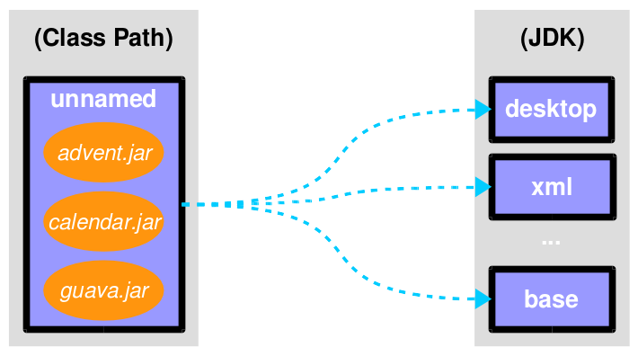

module $module_name {
requires $other_module;
exports $api_package;
}The Java Module System
Developer Advocate
Java Team at Oracle
Let’s get started!
there’s much to talk about
⇝ this can only cover parts of the module system
⇝ we have to skip some detailsslides at slides.nipafx.dev/jpms
Table of contents
| Impedance Mismatch |
| Project Jigsaw |
| Java Module System Basics |
| Beyond The Basics |
| Command Line Options |
Dependency Analysis With jdeps |
Runtime Images With jlink |
| Migration Challenges |
| Incremental Modularization |
Impedance Mismatch
Where the JVM disagrees with us
How do you think about Software?
What is it made of?
How I think about Software
interacting parts
parts have
names
dependencies
capabilities
creates a graph
How the JVM thinks about it
parts are packaged as JARs
to the JVM JARs
have no names
dependencies are unexpressed
have no coherent surface
JVM rolls them into one big ball of mud
Consequences
unexpressed, transitive dependencies
shadowing, version conflicts
complex class loading
slow
unsecure
maintenance nightmare
Project Jigsaw
Teaching the JVM
about that graph
Quick History
- 2005
first discussions about modularity in JDK
- 2008
Project Jigsaw is created
- 2011-2014
exploratory phase; ends with JSR 376
- 2015
prototype is released
- 2017
Java 9 gets released with module system
Goals
Reliable Configuration
Strong Encapsulation
Scalable Systems (esp. the JDK)
Security, Performance, Maintainability
Non-Goals
Version Selection
Multiple Versions
Package Isolation
Means
Introducing modules, which
have a name
express dependencies
encapsulate internals
Everything else follows from here!
Concepts & Features
Modules, Readability, Accessibility
Implied Readability, Qualified Exports
Modular JARs, Module Path, Module Graph
Services
Unnamed Modules, Automatic Modules
Reflection, Layers
Run-time Images
Java Module System Basics
Getting started...
Modules
Pieces of a puzzle
These are the nodes in our graph.
Definition
Modules
have a unique name
express their dependencies
export specific packages
(and hide the rest)
Implementation
Modules are JARs with a
module-info.class
(aka Modular JAR)gets generated from
module-info.java
(in sources root, e.g.src/main/java):this is called a Module Declaration or a
Module Descriptor
Readability
Putting the pieces together
Readability brings edges into our graph.
It is the basis for Reliable Configuration.
Definition
For two modules A and B with
module A {
requires B;
}we say
A requires B
A depends on B
A reads B
B is readable by A
Reliable Configuration
Java will only compile/launch when
every dependency is fulfilled
there are no cycles
there is no ambiguity
Consequences
boost for reliability
module system is strict and rigid
(no way to easily alter dependencies)module name changes are not supported
accidental long cycles will cause problems
Accessibility
Hiding internals
Accessibility governs which types a module can see.
It builds on top of Readability.
It is the basis for Strong Encapsulation.
Definition
A type in one module is only accessible
by code in another module if
the type is public
the package is exported
the second module reads the first
Strong Encapsulation
publicis no longer publiceven reflection doesn’t work
more fine-grained mechanisms exist:
for module authors in module declaration
for module users as command line arguments
Consequences
great boost for maintainability
major reason for community unrest
critical APIs survive longer
(e.g.sun.misc.Unsafe— see JEP 260)life gets tougher for reflection-based
libraries and frameworks
Jigsaw Advent Calendar
A simple example
Structure

Code
public static void main(String[] args) {
List<SurpriseFactory> factories = List.of(
new ChocolateFactory(), new QuoteFactory());
Calendar cal = Calendar.create(factories);
System.out.println(cal.asText());
}No Module
modularization is not required
JARs continue to work as today!
(Unless you do forbidden things, more on that later.)
we can just put the application
on the class path as before
(Boring...)
No Module
Compilation, Packaging, Execution
# compile
$ javac -d classes ${*.java}
# package
$ jar --create --file jars/advent.jar ${*.class}
# run
$ java --class-path 'jars/*' ${main-class}To look up javac, jar, java basics:
nipafx.dev/build-modules
A single module
Modularization

Create module-info.java in sources root:
module advent {
// java.base is implicitly required
// requires no other modules
// exports no API
}(Still Boring...)
A single module
Compilation, Packaging, Execution
# compile with module-info.java
$ javac -d classes ${*.java}
# package with module-info.class
# and specify main class
$ jar --create
--file mods/advent.jar
--main-class advent.Main
${*.class}
# run by specifying a module path
# and a module to run (by name)
$ java --module-path mods --module adventA single module
The Module Path
used by
java,javac, and other tools
to look up dependenciesaccepts a list of artifacts or folders
intended for modular artifacts
Example use:
# `mods` is a directory with JARs
$ java --module-path mods # ...A single module
Readability & Accessibility

Multiple Modules

Multiple Modules
module surprise {
// requires no other modules
exports dev.nipafx.advent.surprise;
}module calendar {
requires surprise;
exports dev.nipafx.advent.calendar;
}module factories {
requires surprise;
exports dev.nipafx.advent.factories;
}module advent {
requires calendar;
requires factories;
requires surprise;
}Multiple Modules
Compilation, Packaging, Execution
# compile all modules at once
$ javac -d classes
--module-source-path "src"
--module advent
# package one by one, eventually advent
$ jar --create
--file mods/advent.jar
--main-class advent.Main
${*.class}
# launch the application
$ java --module-path mods --module adventMultiple Modules
The Module Source Path
With multi-module compilation, several
modules can be compiled at once.
used by
javacto look up source filesdefines a folder structure
uses
*as placeholder for module name
Example:
--module-source-path "./*/src/main/java"Java Module System Beyond The Basics
| Transitive Dependencies |
| Optional Dependencies |
| Services |
| Qualified Exports |
| Reflective Access |
Java Module System Beyond The Basics
| Transitive Dependencies |
| Optional Dependencies |
| Services |
| Qualified Exports |
| Reflective Access |
Transitive Dependencies
Not all dependencies are created equal:
most are used within a module
some are used on the boundary
between modules
Transitive dependencies are about the latter.
Exposing dependencies
Example in calendar exposing surprise:
public static Calendar create(
List<SurpriseFactory> factories) {
// ...
}
⇝ Module calendar is unusable without surprise!
Try and Error?
How can users of exposing module
determine required dependencies?
Try and error?
No!
Implied Readability
Exposing module can mark dependencies
on exposed modules with
requires transitive:
module A {
requires transitive B;
}A reads B as usual
modules reading A will read B
without having to require it
⇝ A implies readability of B
Implied Readability
Applied to the advent calendar:
module calendar {
requires transitive surprise;
// ...
}
Further Applications
Implied readability is surprisingly versatile
aggregator modules
splitting modules up
even merging modules
renaming modules
Aggregator Modules
Making it easier to consume
calendar, factories, surprise:
module adventcalendar {
requires transitive calendar;
requires transitive factories;
requires transitive surprise;
}Splitting Modules
If factories gets split into
api, chocolate, and quotes:
module factories {
requires transitive factory.api;
requires transitive factory.chocolate;
requires transitive factory.quotes;
}Merging Modules
If calendar, factories, surprise
are merged into adventcalendar:
module calendar {
requires transitive adventcalendar;
}
module factories {
requires transitive adventcalendar;
}
module surprise {
requires transitive adventcalendar;
}Careful: Users suddenly depend on a large module!
Renaming Modules
If factories becomes surprisefactories:
module factories {
requires transitive surprisefactories;
}Summary
With A requires transitive B:
A reads B
any module reading A reads B
Applications:
make API usable without further dependencies
aggregator modules
splitting, merging, renaming modules
More at nipafx.dev:
Java Module System Beyond The Basics
| Transitive Dependencies |
| Optional Dependencies |
| Services |
| Qualified Exports |
| Reflective Access |
Optional Dependencies
Not all dependencies are equally required:
some are needed for a module to function
some can be absent and code adapts
some are only needed to enhance
another module’s features
Optional dependencies are about the latter two.
Adapting Code
Use case:
a library may be absent from some deployments
code is aware and does not call absent modules
Example:
each
SurpriseFactoryimplementation
has its own moduleadvent works without any specific factory
Adapting Code

Enhancing A Module
Use case:
a project may provide usability functions
for other librariessuch code will not be called if library modules
are absent
Example:
hypothetical library uber-lib
provides usability functions for various libraries
Enhancing A Module

Conundrum
With what we know so far:
for code to compile against another module
that module has to be requireda required module has to be present
at launch time
⇝ If a module’s types are used
it has to be present at run time
(Reliable configuration!)
Optional Dependencies
Dependency can be marked requires static:
module A {
requires static B;
}at compile time: A requires B as usual
at run time:
if B is present, A reads B
otherwise, app can launch
but access to B can fail
Adapting Code
For advent and the two factories:
module advent {
requires calendar;
requires surprise;
requires static factory.chocolate;
requires static factory.quote;
}Adapting Code
Checking whether module is present:
Optional<SurpriseFactory> createChocolateFactory() {
if (isModulePresent("factory.chocolate"))
return Optional.of(new ChocolateFactory());
else
return Optional.empty();
}Enhancing A Module
For uber-lib:
module uber.lib {
requires static com.google.guava;
requires static org.apache.commons.lang;
requires static io.vavr;
requires static com.aol.cyclops;
}Assumptions:
nobody calls into Guava part without using Guava
no runtime checks necessary
Summary
With A requires static B:
at compile time: A requires B as usual
at runtime: B may be absent
Two kinds of applications:
modules with code adapting to absence
utility libraries that aren’t called
without that dependency
More at nipafx.dev:
Java Module System Beyond The Basics
| Transitive Dependencies |
| Optional Dependencies |
| Services |
| Qualified Exports |
| Reflective Access |
Dependency Inversion?

Service Locator Pattern
Consumers and implementations
of an API should be decoupled.
Service locator pattern:
service registry as central arbiter
implementors inform registry
consumers call registry to get implementations
Services and Modules
In the Java module system:
modules declare which services they use
modules declare which services they provide
ServiceLoaderis the registrycode can interact with it to load services
Service Declarations
Module declarations:
// consumer
module A {
uses some.Service;
}
// provider
module B {
provides some.Service
with some.Type;
}(A and B need access to some.Service)
Loading Services
A never "sees" providers like B
module system picks up all providers
A can get providers from
ServiceLoader
ServiceLoader.load(Service.class)Factory Services
module advent {
requires surprise;
uses surprise.SurpriseFactory;
}
module factory.chocolate {
requires surprise;
provides surprise.SurpriseFactory
with factory.chocolate.ChocolateFactory;
}
module factory.quote {
requires surprise;
provides surprise.SurpriseFactory
with factory.quote.QuoteFactory;
}Factory Services

Factory Services
public static void main(String[] args) {
List<SurpriseFactory> factories = ServiceLoader
.load(SurpriseFactory.class).stream()
.map(Provider::get)
.collect(toList());
Calendar cal = Calendar.create(factories);
System.out.println(cal.asText());
}Summary
To decouple API consumers and providers:
consumer
uses Serviceprovider
provides Service with Impl
Module system is service locator;
request implementations from ServiceLoader:
ServiceLoader.load(Service.class)
Java Module System Beyond The Basics
| Transitive Dependencies |
| Optional Dependencies |
| Services |
| Qualified Exports |
| Reflective Access |
Qualified Exports
So far, exported packages are visible
to every reading module.
What if a set of modules wants to share code?
Known Problem
Similar to utility classes:
if class should be visible outside of package,
it has to be public ⇝ visible to everybodyif package should be visible outside of module,
it has to be exported ⇝ visible to everybody
Module system fixes the former.
What about the latter?
Qualified Exports
module A {
exports some.pack to B;
}B can access
some.pack
as if regularly exportedother modules can not access it
as if not exported at all
Factory Utilities
To ease implementation of SurpriseFactory:
create new module factory
add class
AbstractSurpriseFactoryexport that package only to
factory implementation modules
module factory {
requires transitive surprise;
exports factory
to factory.chocolate, factory.quote;
}Summary
With A exports pack to B:
only B can access types in
some.packother modules behave as if
some.pack
is not exported
Use to share sensible code between modules.
Java Module System Beyond The Basics
| Transitive Dependencies |
| Optional Dependencies |
| Services |
| Qualified Exports |
| Reflective Access |
Reflective Access
Exporting a package makes it public API:
modules can compile code against it
clients expect it to be stable
What if a type is only meant
to be accessed via reflection?
(Think Spring, Hibernate, etc.)
Open Packages
module A {
opens some.pack;
}at compile time:
types insome.packare not accessibleat run time:
all types and members insome.pack
are accessible
A qualified variant (opens to) exists.
Open Modules
open module A {
// no more `opens` directives
}The same as open packages
but for all of them!
Summary
With open modules or open packages:
code can be made accessible
at run time onlyparticularly valuable to open
for reflection
Use to make types available for reflection
without making them public API.
Command Line Options
Escaping the module system’s rules
Command Line Options
The module system is pretty strict but…
… not all modules are well-designed
… not all use cases were intended
What to do then?
Command line options to the rescue!
(I often call them "escape hatches".)
Permitted Illegal Access
JVM makes an exception
from strong encapsulation for:
code on the class path
that accesses pre-JDK-9 packages
Can be configured with --illegal-access.
Illegal Access Modes
Four modes:
permit: warning on first reflective access to packagewarn: warning on each reflective accessdebug: likewarnplus stack tracedeny: illegal access denied (static + reflective)
First three permit static access.
Configure Illegal Access
Configuration:
in Java 9-15,
permitis defaultin Java 16+,
denyis defaultin Java ??, the option will be removed
use
--illegal-accessto override
$ java --class-path 'mods/*'
--illegal-access=deny
advent.MainIllegal Access Recommendations
I recommend:
--illegal-access=deny
to prevent unnoticed access
(at least for tests!)--add-exports/--add-opens
for specific exceptions (see below)
Command Line Options
All following command line flags
can be applied to javac and java!
When used during compilation,
they do not change the resulting
module descriptor!
Add Exports
A common case:
A module needs types that
the owning module doesn’t export.
Export them with --add-exports:
$ java --module-path mods
# --add-exports <module>/<package>=<target>
--add-exports factories/factory.quotes=advent
--module adventUse target ALL-UNNAMED to export
to code on the class path.
Open Packages
Another common case:
A module reflects on types from a package that
the owning module doesn’t open.
Open packages with add-opens:
$ java --module-path mods
# --add-opens <module>/<package>=<target>
--add-opens factories/factory.quotes=advent
--module adventUse target ALL-UNNAMED to open
to code on the class path.
(It is not possible to open an entire module.)
Add Modules
If a module is not required,
it might not make it into the module graph.
Help it get there with --add-modules:
$ java --module-path mods
# --add-modules <module>(,<module>)*
--add-modules java.xml.ws.annotation
--module adventAdd Readability Edges
Maybe a module in the graph is not readable
by another but you need it to be.
Add readability edges with --add-reads:
$ java --module-path mods
# --add-reads <module>=<target>(,<more>)*
--add-reads advent=factories
--module adventPatch Modules
Maybe you have a package split…
Mend it with --patch-module:
$ java --module-path mods
--add-modules java.xml.ws.annotation
# --patch-module <module>=<JAR>
--patch-module java.xml.ws.annotation=jsr305.jar
--module adventAll classes from jsr305.jar are put
into java.xml.ws.annotation.
Patch Module
By putting JAR content into a module A:
split packages can be mended
A needs to read JAR’s dependencies,
which need to export used packagesmodules using JAR content need to read A
and A needs to export used packages
Often used with --add-reads and --add-exports.
Summary
Edit module graph with:
--illegal-accessto configure blanket access--add-exportsto export packages to modules--add-opensto open packages to modules--add-modulesto add modules--add-readsto add readability edges--patch-moduleto add classes to module
Numbers 2. to 4. accept ALL-UNNAMED as target.
More at nipafx.dev:
Analyzing Dependencies With JDeps
Helping You Modularize!
About JDeps
a command line tool
analyzes bytecode to
detect dependenciesexists since Java 8
really shines with modules
Simplest Invocation
$ jdeps sh-2.6.3.jar
> sh-2.6.3.jar -> java.base
> sh-2.6.3.jar -> java.datatransfer
> sh-2.6.3.jar -> java.desktop
# ... truncated more module dependencies ...
> edu.udo.sh -> com.beust.jcommander not found
> edu.udo.sh -> edu.udo.sh.data sh-2.6.3.jar
> edu.udo.sh -> edu.udo.sh.gui sh-2.6.3.jar
> edu.udo.sh -> edu.udo.sh.gui.util sh-2.6.3.jar
> edu.udo.sh -> edu.udo.sh.util sh-2.6.3.jar
> edu.udo.sh -> java.io java.base
> edu.udo.sh -> java.lang java.base
> edu.udo.sh -> javax.swing java.desktop
# ... truncated many more package dependencies ...Analyzing Dependencies
$ jdeps
--class-path 'libs/*' -recursive
sh-2.6.3.jar
# ... truncated split package warnings ...
# ... truncated some module/JAR dependencies...
> sh-2.6.3.jar -> libs/commons-codec-1.6.jar
> sh-2.6.3.jar -> libs/commons-io-2.4.jar
> sh-2.6.3.jar -> libs/dom4j-1.6.1.jar
> sh-2.6.3.jar -> libs/exp4j-0.1.38.jar
> sh-2.6.3.jar -> libs/guava-18.0.jar
# ... truncated more module/JAR dependencies...
# ... truncated many, many package dependencies ...Creating Graphs
$ jdeps
--class-path 'libs/*' -recursive
--dot-output dots
sh-2.6.3.jar
# sed -i 's/-1.0-SNAPSHOT.jar//g' summary.dot
# sed -i '/java.base/d' summary.dot
$ dot -Tpng -O dots/summary.dotJDK-Internal APIs
$ jdeps --jdk-internals
-recursive --class-path 'libs/*'
sh-2.6.3.jar
> batik-codec.jar -> JDK removed internal API
> JPEGImageWriter -> JPEGCodec
> guava-18.0.jar -> jdk.unsupported
> Striped64 -> Unsafe
> sh-2.6.3.jar -> java.desktop
> SteppedComboBox -> WindowsComboBoxUICreating Runtime Images With JLink
Custom-Made For Your Application
Remember This?
Benefiting From JDK Modularization
Create a JDK install with just the code you need:
know which modules your app uses (⇝
jdeps)create an image with those modules (⇝
jlink)
This is about jlink.
A Minimal JDK Image
Create with jlink:
$ jlink
# define output folder for the image
--output jdk-minimal
# where to find modules? (obsolete in ⑪)
--module-path $JAVA_HOME/jmods
# which modules to add (includes dependencies!)
--add-modules java.baseTry it out:
$ jdk-minimal/bin/java --list-modules
> java.baseImage For A Backend
Say you use JAXP, JDBC, and JUL:
$ jlink
--output jdk-backend
--module-path $JAVA_HOME/jmods # obsolete in ⑪
--add-modules java.xml,java.sql,java.loggingImage For A Backend
$ jdk-backend/bin/java --list-modules
> java.base
> java.logging
> java.sql
> java.transaction.xa
> java.xmlImage Including Your App And Dependencies
To create an image for your app:
all JARs need to be modularized!
including dependencies
Unless you use Gunnar Morling’s ModiTect,
which creates module descriptors on the fly.
Linking And Launching
Creating the image:
$ jlink
--output app-image
--module-path $JAVA_HOME/jmods:mods
--add-modules advent
# services are not resolves automatically
--add-modules factory.surprise,factory.chocolateLaunching the app:
app-image/bin/java --module adventCreating A Launcher
You can even create a launcher:
$ jlink
--output app-image
--module-path $JAVA_HOME/jmods:mods
--add-modules advent,...
# --launcher <name>=<module>[/<mainclass>]
--launcher calendar=adventLaunching the app:
app-image/bin/calendarMore Features
automatic service binding
(with--bind-services)various optimizations
(size and launch performance)plugin API (not yet public)
cross OS image generation
Summary
You can use jlink to:
create a runtime image
with just the right modulescreate an application image
including your code
This should make certain kinds of deploys
smaller and easier.
Migration Challenges
What to look out for
when running on JDK 11
Break Stuff
Some internal changes break existing code!
Just by running on JDK 11
(even without modularizing the application).
Of Modules And JARs
Modularized JDK and legacy JARs have to cooperate.
Two requirements:
for the module system to work,
everything needs to be a modulefor compatibility, the class path
and regular JARs have to keep working
The Unnamed Module
The Unnamed Module
contains all JARs on the class path
(including modular JARs).
has no name (surprise!)
can read all modules
exports all packages
Inside the unnamed module
"the chaos of the class path" lives on.
Challenges
internal APIs
JEE modules
split packages
runtime images
Internal APIs
JDK-internal APIs are:
all in
sun.*most in
com.sun.*
(unless marked@jdk.Exported)
encapsulated at compile time
accessible at run time
for some timecritical APIs may survive longer
(e.g.sun.misc.Unsafe)
What to look for?
JDeps can report internal dependencies:
$ jdeps --jdk-internals
-recursive --class-path 'libs/*'
scaffold-hunter-2.6.3.jar
> batik-codec.jar -> JDK removed internal API
> JPEGImageWriter -> JPEGCodec
> guava-18.0.jar -> jdk.unsupported
> Striped64 -> Unsafe
> scaffold-hunter-2.6.3.jar -> java.desktop
> SteppedComboBox -> WindowsComboBoxUIWhat else to look for?
look for reflection, especially
Class::forNameAccessibleObject::setAccessible
recursively check your dependencies!
What to do?
fix your code
contact library developers
look for alternatives
(in the JDK or other libraries)consider command line flags
--add-exports,--add-opens, or
--illegal-access
JEE Modules
java.activation (
javax.activation)java.corba (CORBA packages)
java.transaction (
javax.transaction)java.xml.bind (
javax.xml.bind.*)java.xml.ws (JAX-WS packages)
java.xml.ws.annotation (
javax.annotation)
These were
deprecated for removal in ⑨
removed in ⑪
What to look for?
JDeps shows dependencies on platform modules:
$ jdeps -summary sh-2.6.3.jar
> sh-2.6.3.jar -> java.base
> sh-2.6.3.jar -> java.datatransfer
> sh-2.6.3.jar -> java.desktop
> sh-2.6.3.jar -> java.logging
> sh-2.6.3.jar -> java.prefs
> sh-2.6.3.jar -> java.sql
> sh-2.6.3.jar -> java.xmlWhat to do?
Split Packages
packages should have a unique origin
no module must read the same package
from two modules
The implementation is even stricter:
no two modules must contain
the same package (exported or not)split packages on class path
are inaccessible
Examples
some libraries split
java.xml.*, e.g. xml-apisjsr305 splits
javax.annotationsome JBoss modules split, e.g.,
java.transaction,java.xml.ws
What to look for?
JDeps reports split packages:
$ jdeps -summary
-recursive --class-path 'libs/*'
project.jar
> split package: javax.annotation
> [jrt:/java.xml.ws.annotation,
> libs/jsr305-3.0.2.jar]What to do?
Your artifacts:
rename one of the packages
merge package into the same artifact
merge the artifacts
place both artifacts on the class path
Otherwise:
upgrade the JDK module with the artifact
--patch-modulewith the artifact’s content
Run-Time Images
new JDK/JRE layout
internal JARs are gone (e.g.
rt.jar,tools.jar)JARs are now JMODs
application class loader is no
URLClassLoader
(no way to append to its class path)new URL schema for run-time image content
What to look for?
does the code rummage around
in the JDK / JRE folder?are URLs to JDK classes / resources handcrafted?
search for casts to
URLClassLoaderread class path from system property
java.class.pathno way to append class path at run time
to load new classes, create new
ClassLoader
Obsolete
Compact Profiles —
jlinkEndorsed Standards Override Mechanism,
Extension Mechanism,
Boot Class Path Override —--upgrade-module-pathJRE selection
-version:N—jlink?Web Start — openwebstart.com
JavaFX in JDK — openjfx.io
But wait, there’s more!
Yes, yes, there’s more:
Background:
And there are new version strings:
goodbye
1.9.0_31, hello9.0.1
General Advice I
The most relevant for most applications:
internal APIs
JEE modules
split packages
General Advice II
get your code in shape
(and prevent relapses)check your dependencies and tools
if any are suspicious
(automatically true for IDEs, build tools):make sure they’re alive
get them up to date!
or look for alternatives
download Java 11 and try it!
Incremental Modularization
Moving Into Module Land
Why Is It Even An Option?
most module systems are "in or out"
but modularized JDK and legacy JARs
have to cooperate!there is a boundary between
legacy and modules
Incremental modularization means
moving that boundary.
Enablers
Incremental modularization is enabled by two features:
Unnamed Module(s)
Automatic Modules
And the fact that module and class path coexist:
modular JARs can be put on either
"regular" JARs can be put on either
The Unnamed Module
Why The Class Path "Just Works"
Definition
The Unnamed Module
contains all JARs on the class path
(including modular JARs).
has no name (surprise!)
can read all modules
exports all packages
Inside the unnamed module
"the chaos of the class path" lives on.
Example
Put all your JARs on the class path.

No Access
what if your code was modularized
and your dependencies were not?proper modules can not depend on
"the chaos on the class path"this is not possible:
module calendar { requires unnamed; }
No Access

Automatic Modules
From Modules To The Class Path
Definition
An Automatic Module
is created for each "regular" JAR
on the module path.
name defined by manifest entry
AUTOMATIC-MODULE-NAMEor
derived from JAR namecan read all modules
(including the Unnamed Module)exports all packages
Example
put
guava-19.0.jaron the module paththen this works:
module calendar { requires guava; }
Example

What Goes Where?
| Class Path | Module Path | |
|---|---|---|
Regular JAR | Unnamed Module | Automatic Module |
Modular JAR | Unnamed Module | Explicit Module |
Unnamed or named module?
The user decides, not the maintainer!
Modularization Strategies
Three strategies emerge:
bottom-up
top-down
inside-out
Bottom-Up
Works best for projects without
unmodularized dependencies
(libraries).
turn project JARs into modules
they still work on the class path
clients can move them to the module path
whenever they want
Top-Down
Required for projects with
unmodularized dependencies
(applications).
turn project JARs into modules
Top-Down
modularized dependencies:
require direct ones
put all on the module path
unmodularized dependencies:
require direct ones with automatic name
put direct ones on the module path
put others on the class path
Top-Down
When dependencies get modularized:
hopefully the name didn’t change
if they are already on the module path,
nothing changesotherwise move them there
check their dependencies
Inside-Out
What about published projects with
unmodularized dependencies
(libraries)?
top-down mostly works
but there’s an important detail
about automatic module names!
Inside-Out
Automatic Module Names
automatic module name may
be based on JAR namefile names can differ
across build environmentsmodule name can change
when project gets modularized
⇝ Such automatic module names are unstable.
Inside-Out
Impossible Module Requirements
dependencies might require the same
module by different namesthe module system does not support that
there is no way to launch that application!
⇝ Do not publish modules
that depend on automatic modules
whose names are based on file names!
Inside-Out
Manifest Entry
thanks to manifest entry,
projects can publish their module nameassumption is that it won’t change
when project gets modularizedthat makes these names stable
⇝ It is ok to publish modules
that depend on automatic modules
whose names are based on manifest entry.
So long…

More
Slides at slides.nipafx.dev⇜ Get my book!
Follow Nicolai
nipafx.dev/nipafx
Follow Java
inside.java/java // /openjdk
Image Credits
Introduction
puzzle-people: Kevin Dooley (CC-BY 2.0)
binary-code: Christiaan Colen (CC-BY-SA 2.0)
ball-of-mud-2: Andi Gentsch (CC-BY-SA 2.0)
jar-hell: Wellcome Library, London (CC-BY 4.0)
Project Jigsaw
flag-amsterdam: George Rex (CC-BY-SA 2.0)
puzzle-cubed: David Singleton (CC-BY 2.0)
Java Module System
puzzle-piece-green:
StockMonkeys.com (CC-BY 2.0)puzzle-pieces-put-together:
Ken Teegardin (CC-BY-SA 2.0)iceberg:
NOAA’s National Ocean Service (CC-BY 2.0)class and module diagrams:
Nicolai Parlog (CC-BY-NC 4.0)
Incremental Modularization
keep-out: Brian Smithson (CC-BY 2.0)
garbage-only: Peter Kaminski (CC-BY 2.0)
golden-gate: Nicolas Raymond (CC-BY 2.0)
confusion: Procsilas Moscas (CC-BY 2.0)
module diagrams:
Nicolai Parlog (CC-BY-NC 4.0)
Migration Challenges
broken-glass:
Eric Schmuttenmaer (CC-BY-SA 2.0)internals: David French (CC-BY 2.0)
cut: Jinx! (CC-BY-SA 2.0)
cells: Jonathan Lin (CC-BY-SA 2.0)
obsolete: Trevor King (CC-BY 2.0)
sign: Duncan Harris (CC-BY-SA 2.0)
Rest
question-mark: Milos Milosevic (CC-BY 2.0)
bundles: Danumurthi Mahendra (CC-BY 2.0)